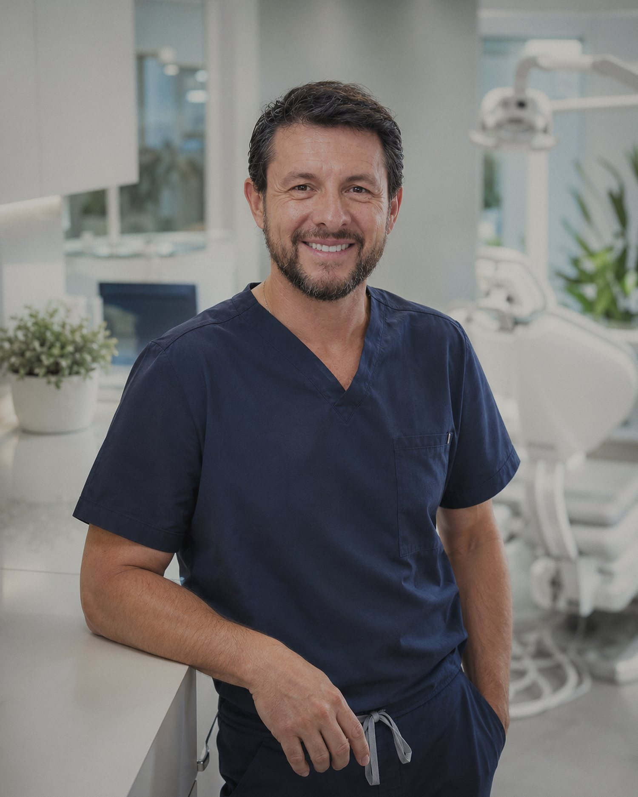
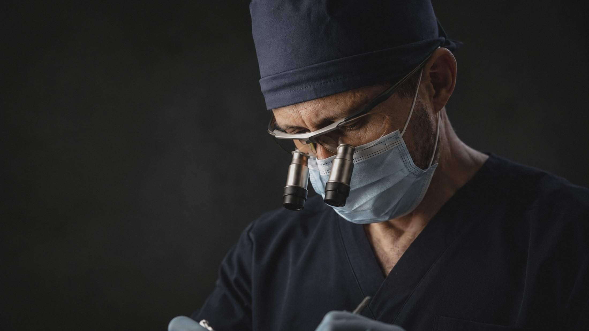

Board-certified in dental implantology, with twenty-seven years between Colombia and California devoted to complex extractions, reconstruction and full-arch cases — done unhurried, and done with care.
Not a list of services — the disciplines refined over nearly three decades.
From single implants to full-arch All-On-X reconstruction, planned and placed with precision.
Rebuilding function and structure where bone and tissue have been lost.
The difficult extractions and surgeries other clinicians prefer to refer elsewhere.
Long-term care that protects the work of a restored smile.
Identifying and addressing conditions affecting teeth, gums, and bone.
Clarity and direction for patients facing complex decisions.
Jorge trained in Colombia and built his life's work in California. His practice runs on one unglamorous principle: take the time the case actually needs. That's why the referrals come from other surgeons.
Begin with a conversation ↗
The clinic — Redondo Beach
27 years of steady hands"When a case is beyond what I can handle, Jorge is the first call I make. My patients always come back grateful — and so do I."
"I had been told by two surgeons it was impossible. Dr. Arce took the time no one else did. I can eat, smile, and speak again."
"I refer my most complex cases to Dr. Arce without hesitation. Twenty-seven years shows."
"Calm, precise, and genuinely kind. He explained every step until I understood. The result speaks for itself."
"I was terrified of the procedure. He never rushed me. Best decision I have made for my health."
"Reliable, communicative, and surgically excellent. He sends my patients back with a full report every time."
Yes — that's exactly the kind of case this practice was built around. A consultation and imaging will tell us honestly what's possible for you, and if the answer is a pathway, it will be explained in plain language.
No. Many patients arrive referred by their dentist, but you can request a consultation directly — by phone or through the form below.
A way to restore a full arch of teeth on a small number of implants. Whether you're a candidate depends on your bone, health and goals — which is what the consultation is for. There's also a plain-language guide you can request below.
Yes. Second opinions are one of the practice's six core disciplines — clarity and direction for patients facing complex decisions, with no pressure attached.
The Dental Implants Center of South Bay serves Redondo Beach and Torrance, California. Visits are by appointment: (310) 327-4166.
Care starts with a simple conversation — at your own pace, with the time your case actually needs.
Request a consultation ↗